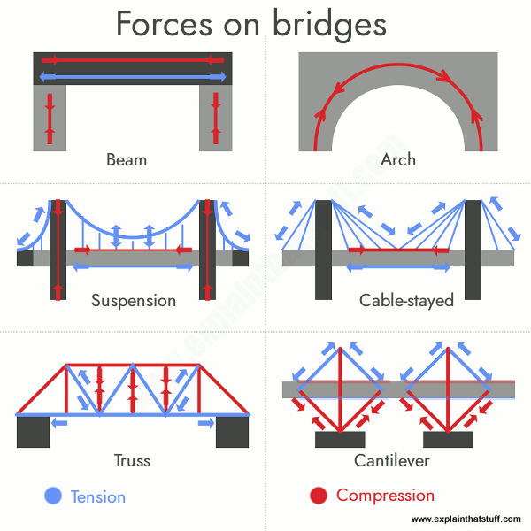
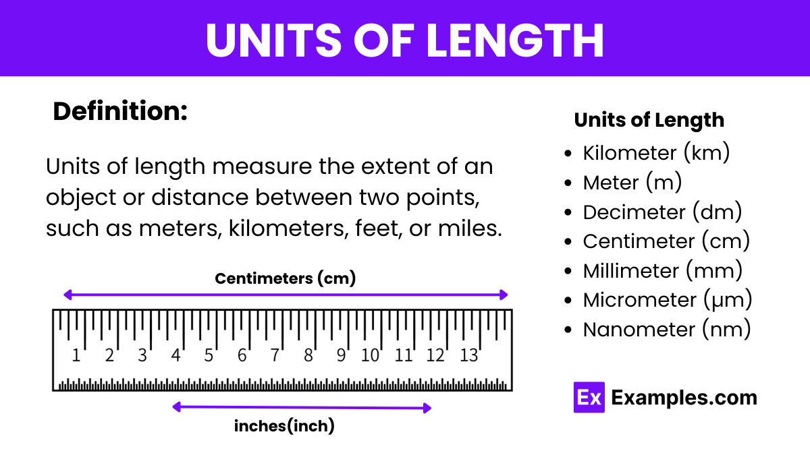
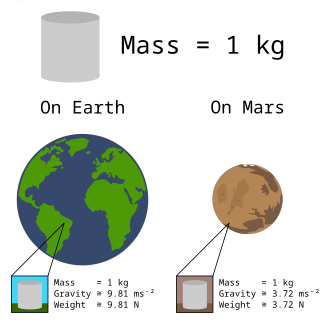

Key Notes
Why this matters: Understanding how structures carry loads is fundamental to engineering. These concepts directly apply to your water tower project. Master these concepts in Toolkit 2, then apply them to design and build your tower in Toolkits 3 and 4.
1. Loads, Forces and Reactions

Every structure exists to carry loads safely to the ground. When you analyse your tower, always start by asking: what loads are acting, how big are they, and where do they go?
- Dead loads: Permanent loads such as the self-weight of the structure (members, deck, tank, connections).
- Live loads: Loads that move or change over time, such as water level in a tank, or weights you add during testing.
- Environmental loads: Mainly wind in this course, but in real structures also temperature changes and sometimes earthquake.
- Point loads: Loads applied at a single location, such as a single weight stack in the centre of a deck.
- Distributed loads: Loads spread along a length or area, such as the weight of a deck or continuous water in a tank.
Loads are resisted by reactions at supports. For a simple, symmetrical tower with a central point load and four identical supports, each support carries a portion of the total load. In more complex layouts, some supports may carry more than others depending on the position of the load.
When sketching, show loads and reactions as arrows with labels, and clearly mark which supports are pinned, roller or fixed. This helps you explain how your structure works, not just what it looks like.
2. SI Units and Simple Calculations

Engineering uses the SI (International System of Units) so that calculations are consistent worldwide:
- Mass: kilograms (kg)
- Force: newtons (N) or kilonewtons (kN)
- Length: metres (m) or millimetres (mm)
- Area: square metres (m²); Volume: cubic metres (m³)
Important distinction: Weight is a force, not a mass. To convert a mass to weight:

Weight (N) = mass (kg) × 9.8 m/s² (often rounded to 10 m/s² for simple class problems)
Example: A 5 kg mass hanging from your tower applies roughly 50 N of force. When you report test data, always state forces in N or kN and lengths in m or mm. Avoid writing "50 kg of force" - this is incorrect terminology.
3. Structural Forms and Load Paths

Different structural forms carry load in different ways. Your water tower will use a truss structure:
- Truss: A framework made from straight members joined at nodes, usually arranged as triangles. Members mainly carry axial tension or compression. This is what you'll use for your tower.
- Beam: Straight horizontal member carrying load between supports. Top fibres are in compression, bottom fibres in tension for a simply supported beam.
- Arch: Curved structure that carries compression and pushes outwards at supports (horizontal thrust).
- Cantilever: Beam or structure fixed at one end and free at the other. Bending stresses are reversed compared with a simply supported beam.

A load path is the route a load takes from where it is applied, through the structure, into the supports and down to the ground. Efficient structures have direct, simple load paths. When you annotate your tower design, use arrows to show how load travels through members into the supports.
4. Tension, Compression and Buckling
Members can be broadly separated into those mainly in tension (ties) and those mainly in compression (struts):
- Tension members (ties): Resist pulling forces; usually fail by yielding (stretching permanently) and then fracturing. They are strongest when the cross-section is adequate and there are no sharp notches or holes close to edges.
- Compression members (struts): Resist squeezing forces; often fail by buckling (sudden sideways bending) long before the material's crushing strength is reached.
Buckling depends on:
- Slenderness: The ratio of length to thickness. Long, thin members buckle much more easily than short, stocky ones.
- End restraint: Members that are braced or fixed at intervals behave as if they are shorter and can carry more load.
- Orientation: Rotating a member can change whether the load acts through its strong axis or weak axis.
Design tip: In your tower design, try to keep compression members shorter and well braced, and use more tension members where possible. When a member buckles in testing, record its length, cross-section, and how it was restrained, then suggest how you could improve it.
5. Triangulation and Trusses
A rectangle can distort into a parallelogram without changing the lengths of its sides. A triangle cannot change shape without at least one side changing length, so it is inherently stable.
Adding diagonal bracing to a frame forces it to behave like a set of triangles. This has two big benefits:
- Direct load sharing: Loads are shared more directly between members as axial tension and compression.
- Resistance to racking: The frame is much more resistant to "racking" (sideways distortion) under wind or uneven loading.
In a truss, you want most members to act as simple struts or ties. Avoid layouts where one member has to carry large bending loads by itself. When comparing truss options in the PBS simulator and your own tower designs, comment on which designs move the least for the same load and why.
6. Strength-to-weight and scaling up
A structure is efficient if it carries the required load safely while using as little material as practical. This is sometimes expressed as a strength-to-weight ratio:
Strength-to-weight ≈ maximum load carried (N) ÷ self-weight of the structure (kg)
Key ideas for your water tower:
- Making a member deeper in the direction of bending greatly increases stiffness and bending strength.
- Hollow sections such as SHS and RHS are often better than solid bars because material is placed away from the neutral axis, where it does the most work.
- Extra material only helps if it is placed where forces are high. Randomly making every member thicker just adds weight without much extra capacity.
When you scale a 300 mm tower design up to a 30 m real tower, loads increase dramatically. Use mass tables (kg/m) and given prices to:
- Calculate total length, mass and cost for different section sizes and wall thicknesses.
- Compare options and justify which gives the best balance of strength, deflection control and cost.
In your report, always connect test results (deflection, failure load and mode) to specific design choices such as member size, bracing layout and material selection.